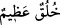

“Ve sen elbette” boyutlarını hiçbir yaratığın kavrayamayacağı “yüce bir ahlâk
üzeresin.” Bu nedenle sen kâfirler tarafından sana yöneltilen ve hiç bir beşerin
tahammül edemeyeceği eziyetlere katlanmaktasın.
Âlimlerden birisi şöyle diyor: Rasulüm! Sen Allah’ın ahlâkı ile ve O’nun kelam-ı
kadîminin ahlâkı ile ahlâklanmış olduğun ve O’nun kudsî yardımı ile desteklenmiş
bulunduğun için kâfirlerin iftirâlarından etkinlenme, sana verecekleri eziyetlerden acı
duyma. Çünkü sen, kendi kendine değil, Allah sâyesinde sabrediyorsun. Bu meâlde
olmak üzere Allah Teâlâ şöyle buyurur: “Sabret! Senin sabrın da ancak Allah’ın
yardımı iledir.” (en-Nahl, 16/127) Allah’tan daha sabırlı hiçbir kimse yoktur.
Âyette yer alan “alâ” harf-i isti’lâ ifâde etmektedir. Bu hâliyle âyet-i kerîme
Peygamberimiz (s.a.)’in ahlâk-ı hamîdeyi nefsinde barındırdığını ve onun Allah
Teâlâ’nın râzı olduğu amelleri gönüllü olarak yerine getirdiğini, nihâyet bu güzel ahlâk
ve iyi amellerin onun açısından tabiî olan işler mertebesine yükseldiğini ifâde
etmektedir. Bu sebeple Allah bir âyet-i kerîmede Peygamberi’ne şöyle hitâb eder:
“Rasûlüm de ki: Buna karşılık ben sizden bir ücret istemiyorum. Ve ben
olduğundan başka türlü görünenlerden de değilim.” (Sâd, 38/86) Bu âyette geçen
“mütekellifin” ifâdesi dikkate alınarak âyete mânâ vermek gerekirse Efendimiz’e; “Ben
ahlâkımdan size görünenler hususunda herhangi bir yapmacık davranış içinde değilim”
diye söylemesi emrediliyor. Çünkü olduğundan başka türlü davranmaya çalışan ve
yapmacık hareketlerde bulunan kimsenin büründüğü bu karakter uzun süre devam etmez.
Tam tersine kişiye tekrar eski karakteri geri döner. İnsanın bir zâhirî; dışa vuran biçimi
vardır. Herkesin çıplak gözle müşâhede edip görebileceği kendine âid bir şekli vardır.
İnsanın bu dış şekli mülk âleminden olup sâdece bir şekilden ibârettir. İnsanın bir de
bâtinî; yâni iç dünyaya âid şekli vardır. Bu iç dünyaya âid hâl ve gidişi, ancak kalpte
bulunan basîret gözlemleyebilir. İşte bâtınî âleme âid olan bu şekil melekût âleminden
olup bu şeklin adı da ahlâktır. Nasıl ki zâhirî biçimin, almış olduğu şekiller ve
bulunduğu durum ve renkler itibariyle güzelliği veya çirkinliği vardır, aynen bunun gibi
insanın bâtınî hâl ve gidişinin de şemâil ve tabîat bakımından mânevî bir güzelliği veya
çirkinliği vardır. Bu sebeple âlimler yaratıkları, bazen mahmûd ve mezmûm, bazen de
hasen ve kabih şeklinde kısımlara ayırırlar. Çoğu zaman hasen kelimesi kullanılır; fakat
mahmûd anlamı kasdedilir. Çünkü ahlâk ismi olarak verilmeye lâyık olan, mahmûddur.
Bu âyette yer alan “__WORD__ /hulükun azîmun/yüce bir ahlâk” ifâdesi ile alâkalı olarak
İmam Fahreddin Razi’nin ahlâk târifi bu kabildendir.
İmam Fahreddin Razi ahlâkı şöyle târif eder: Ahlâk nefsâni bir melekedir ki bununla
bezenmiş olana güzel fiilleri yapmak kolay gelir. Güzel fiilleri yapmak ayrı şeydir,
bunların yapılmasının insana kolay gelmesi ayrı şeydir. İşte “bu kolaylığın” meydana
geldiği hâl ahlâktır. Ahlâka “hulük” denmesi, insanın içine yerleşmesi ve orada sâbit
hâle gelip insanın yaratılmış olduğu hilkat ve karakter şeklini almasından dolayıdır. Her
ne kadar ahlâkın, insanın içine yerleşmiş bir meleke hâlini alması için uzun bir çabaya